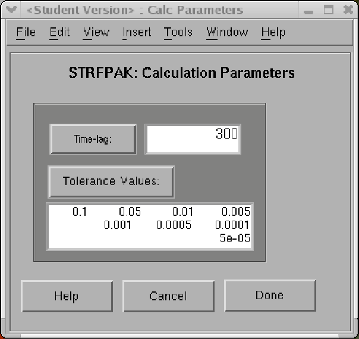

Next: Displaying Input
Up: Get Input
Previous: Getting Input
Contents
Figure 3.8:
Calculation parameter window for the auditory example
|
 |
in STRFPAK mean the calculation parameters used
for the estimation of the STRF. The
Calc Parameters window is shown in the following figure 3.8.
There are two types of calculation parameters required by STRFPAK-2.0:
and
.
Use the help button to reveal the meaning and
the format needed for specifying these parameters.
The TimeLag parameter controls the magnitude of the maximum temporal duration of the STRF. STRFPAK assumes values of the STRF more than TimeLag bin sizes away from simultaneity are 0.
For example, since the bin size for the above auditory data is  ms,
the time course covers a period of
ms,
the time course covers a period of  ms if we set
TimeLag as
ms if we set
TimeLag as  .
For the visual example, the bin size is ms, the time course
covers a period of
.
For the visual example, the bin size is ms, the time course
covers a period of  ms if we set TimeLag as
ms if we set TimeLag as  .
If a larger range is needed, TimeLag can be increased.
STRFs with large TimeLags or large-dimensional stimuli will have so many free parameters that a form of regularization is desired. STRFPAKs regularization works by projecting the STRF onto a subspace spanned by the strongest few eigenvectors of the stimulus autocorrelation. Tolerance value controls how many eigenvectors are included in this subspace. All eigenvectors with a corresponding eigenvalue less than a given tolerance value are set to zero in the estimated STRF. Since it is difficult to guess what the tolerance value should be for any cell a priori, and since estimating and validating a STRF at several tolerance values is computationally easy, a list of trial tolerance values are typically used.
In the above examples, we have set trial Tolerance values to
.
.
If a larger range is needed, TimeLag can be increased.
STRFs with large TimeLags or large-dimensional stimuli will have so many free parameters that a form of regularization is desired. STRFPAKs regularization works by projecting the STRF onto a subspace spanned by the strongest few eigenvectors of the stimulus autocorrelation. Tolerance value controls how many eigenvectors are included in this subspace. All eigenvectors with a corresponding eigenvalue less than a given tolerance value are set to zero in the estimated STRF. Since it is difficult to guess what the tolerance value should be for any cell a priori, and since estimating and validating a STRF at several tolerance values is computationally easy, a list of trial tolerance values are typically used.
In the above examples, we have set trial Tolerance values to
.
Next: Displaying Input
Up: Get Input
Previous: Getting Input
Contents
2004-08-09